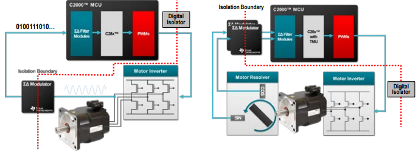
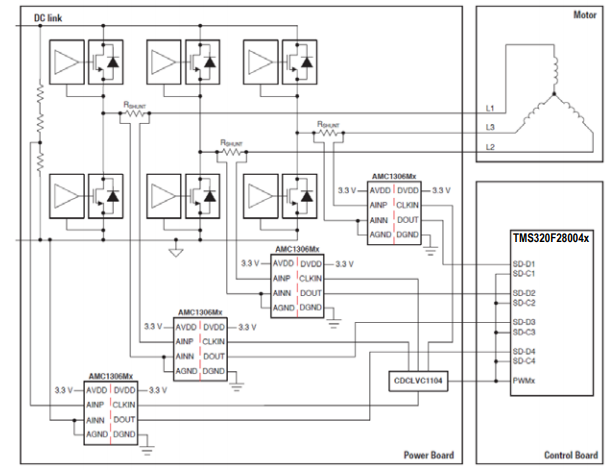

Sigma Delta Filter Module (SDFM)#
The C2000 Sigma Delta Filter Module (SDFM) is a four-channel digital filter designed specifically for current measurement in motor control applications.
What is Delta-Sigma Modulation?#
Delta-Sigma Modulation is a type of modulation used to encode an analog signal into a digital bit stream. Intuitively speaking, since the delta-sigma modulated bit stream must encode enough information to reasonably reconstruct the original signal, a clock speed much higher than the Nyquist rate is used in delta-sigma modulation devices. Decoding a delta-sigma modulated bit stream involves passing the signal through a digital low pass filter, followed by a decimation stage, which is also known as down sampling. The resulting signal is a sampled version of the original analog signal which can be processed digitally for a wide range of applications.
SDFM Module Overview#

Each channel can receive an independent delta-sigma modulator bit stream
Bit streams are processed by four individually programmable digital decimation filters
Filters include a fast comparator for immediate digital threshold comparisons for over-current and under-current monitoring
A filter-bypass mode is available to enable data logging, analysis, and customized filtering
The SDFM pins are configured using the GPIO multiplexer. A key benefit of the SDFM is it enables a simple, cost effective, and safe high-voltage isolation boundary.
Isolated Phase Current-Sense Example#
SDFM enables galvanic isolation when utilized in conjunction with isolated sigma delta modulators.

How to improve SDFM Noise Immunity:#
Special precautions should be taken on both SD-Cx and SD-Dx signals to ensure a clean and noise free signal that meets SDFM timing requirements. Precautions such as series termination resistors for ringing noise due to any impedance mismatch of clock driver and spacing of traces from other noisy signals are recommended.
Note:
Improper routing and layout of SDFM Clock and data traces on PCB can create signal integrity issues and sample and hold violations.
TI provides an application report which discusses the best practices for clock and data line routing and termination when using isolated sigma delta modulators.
Achieving Better Signal Integrity With Isolated Delta Sigma Modulators in Motor Drives
Note:
TI highly recommends using mode 0 as it provides best filter performance in noisy conditions
Resources#
Feedback
Please provide any feedback you may have about the content within C2000 Academy to: c2000_academy_feedback@list.ti.com